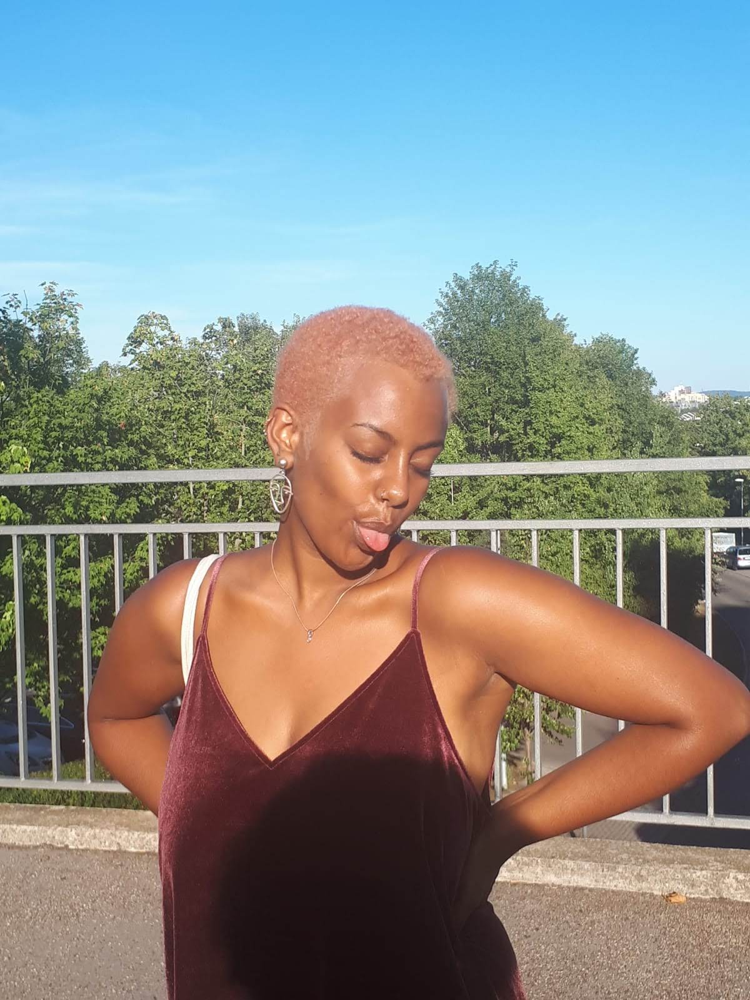
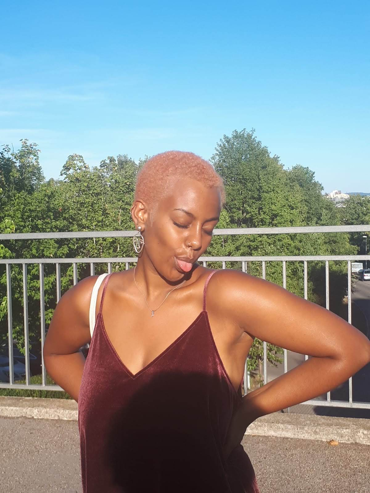

| 5 Dec 2018–9 Dec 2018 |
Moderator and Assistant Manager
International Queer and Migrant Film Festival, Amsterdam (Netherlands)
|
Organisation and Facilitation of the Festivals' Future Filmmaker Academy
Moderation of several movies' Q&A |
| 6 Sep 2016–3 Sep 2017 |
European Volunteering Service (EVS)
STRANAIDEA S.C.S. IMPRESA SOCIALE ONLUS, Turin (Italy)
|
Supporting the educators in different cultural and health centres of the organisation in everyday
scheduled time
Helping users to carry out artistic, intercultural, sporty entertainment and leisure activities
Establishing a good and positive relationship with users
Supporting them to maintain and improve their abilities and autonomies
Participating in theatrical workshops with disabled people and giving Italian language lessons to
refugees
|
| Mar 2016–Mar 2017 |
Regional and national student representative
LSBR, Stuttgart (Germany)
|
student's representative in the state of Baden-würrtemberg arguing for their interest in
shaping the state-wide education
building up and participating in councils to represent students' interest nationwide
founding and organising communication and solidarity networks for schools
emancipating students in their rights of self-organisation and self-determination
empowering them in taken active participation shaping their daily school life
|
| Oct 2014–Jul 2016 |
Paramedic in emergency responses
German Red Cross, Stuttgart (Germany)
|
Volunteering in various events
Being in charge of first-aid response system at high school for 3 years |
| Jul 2014–Jun 2016 |
Volunteering Translator
FFF (Freundeskreis Flüchtlinge Feuerbach), Stuttgart (Germany) |
working as a translator in institutional settings
trying to build a rapport between schools and organisation to access bigger networks |
 
